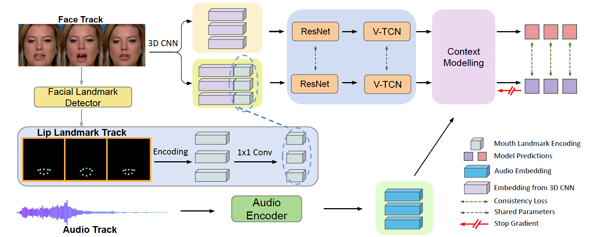

Paper and Supplementary Material

LASER: Lip Landmark Assisted Speaker Detection for Robustness.
Preprint, 2025.
(hosted on arXiv:2501.11899)
|
|
|
|
|
|
|
|
|
LASER (ours)
|
LoCoNet baseline
|
| Comparison on a challenging clip. The man on the left is not predicted correctly by the LoCoNet model, but LASER detects him, showing how lip-aware training fixes missed speakers under noisy, unsynchronized conditions. |
|
LASER (ours)
|
LoCoNet baseline
|
| Comparison on a challenging clip.. |
| Active Speaker Detection (ASD) aims to identify who is speaking in complex visual scenes. While humans naturally rely on lip-audio synchronization, existing ASD models often misclassify non-speaking instances when lip movements and audio are unsynchronized. To address this, we propose Lip landmark Assisted Speaker dEtection for Robustness (LASER), which explicitly incorporates lip landmarks during training to guide the model’s attention to speech-relevant regions. Given a face track, LASER extracts visual features and encodes 2D lip landmarks into dense maps. To handle failure cases such as low resolution or occlusion, we introduce an auxiliary consistency loss that aligns lip-aware and face-only predictions, removing the need for landmark detectors at test time. LASER outperforms state-of-the-art models across both in-domain and out-of-domain benchmarks. To further evaluate robustness in realistic conditions, we introduce LASER-bench, a curated dataset of modern video clips with varying levels of background noise. On the high-noise subset, LASER improves mAP by 3.3 and 4.3 points over LoCoNet and TalkNet, respectively, demonstrating strong resilience to real-world acoustic challenges. |
| We compare LASER-bench with existing ASD benchmarks and summarize the main quantitative highlights reported in the paper. |
| Benchmark | Total Face Tracks | Total Face Crops | Notes |
|---|---|---|---|
| AVA-Val | 8K | 760K | Only movies |
| Talkies-Val | 6.8K | 235K | Natural dialog clips |
| ASW-Val | 3.5K | 171K | Only news background noise |
| LASER-bench (ours) | 4.9K | 738K | Curated with varying background noise |
| Table 1. Dataset comparison. |
| Table 3 (main highlight). LASER improves robustness on noisy scenarios in LASER-bench. |
| Model | Low Noise mAP | High Noise mAP |
|---|---|---|
| TalkNet | 94.8 | 77.8 |
| TalkNet + LASER | 95.0 | 82.1 |
| LoCoNet | 96.2 | 86.7 |
| LoCoNet + LASER | 96.4 | 90.0 |
| LASER boosts performance, with the largest gains under high background noise. |
| Table 2. LASER consistently improves models on in-domain (A V A) and out-of-domain (Talkies, ASW) evaluations. |
| Model | A V A | Talkies | ASW |
|---|---|---|---|
| EASEE | 94.1 | 86.7 | - |
| MAAS | 88.8 | 79.7 | - |
| TalkNet† | 92.2 | 85.9 | 85.8 |
| TalkNet + LASER | 92.5 | 87.6 | 86.6 |
| Light-ASD† | 93.5 | 87.6 | 87.4 |
| Light-ASD + LASER | 93.8 | 88.1 | 87.6 |
| LoCoNet† | 95.2 | 88.4 | 88.4 |
| LoCoNet + LASER | 95.3 | 89.0 | 88.9 |
| LoCoNet w/ CL† | 95.5 | 88.3 | 88.5 |
| LoCoNet w/ CL + LASER | 95.4 | 89.7 | 89.5 |
| Out-of-domain columns are Talkies and ASW; LASER lifts every model across both settings. |
|
 |
| Given a face track, we obtain a lip landmark track with a facial landmark detector and encode the 2D coordinates into continuous 2D feature maps, aggregated via a 1x1 convolution. The encoded lip track is concatenated with 3D-CNN visual features and passed through ResNet and V-TCN for temporal representation, followed by context modeling modules to produce the final prediction. A consistency loss between predictions with and without lip landmark encoding (gradients only through the lip-free path) makes the model robust to missing lip landmarks at test time. |
|
Le Thien Phuc Nguyen, Zhuoran Yu, Yong Jae Lee LASER: Lip Landmark Assisted Speaker Detection for Robustness. Preprint, 2025. (hosted on arXiv:2501.11899) |
@misc{nguyen2025laserliplandmarkassisted,
title={LASER: Lip Landmark Assisted Speaker Detection for Robustness},
author={Le Thien Phuc Nguyen and Zhuoran Yu and Yong Jae Lee},
year={2025},
eprint={2501.11899},
archivePrefix={arXiv},
primaryClass={cs.CV},
url={https://arxiv.org/abs/2501.11899},
}
|
Acknowledgements |